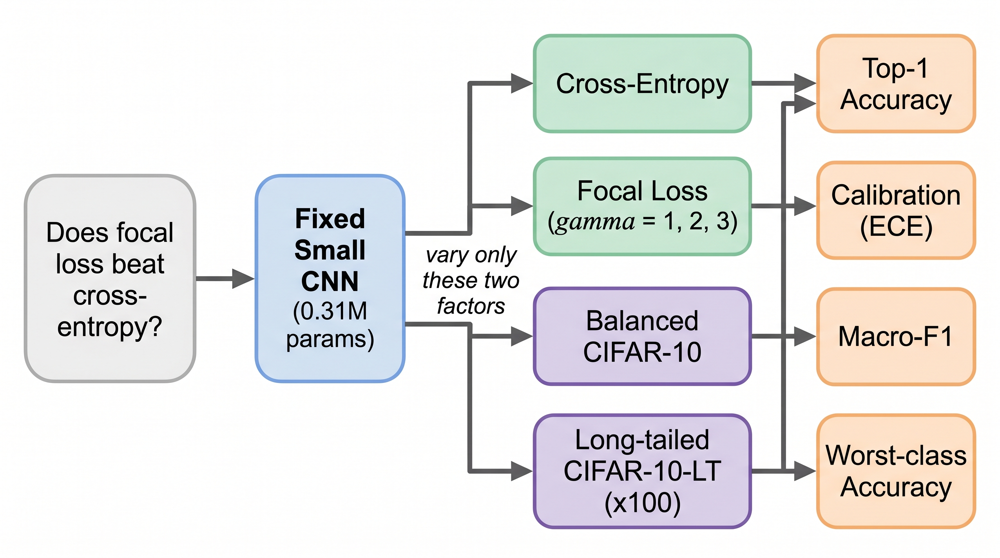
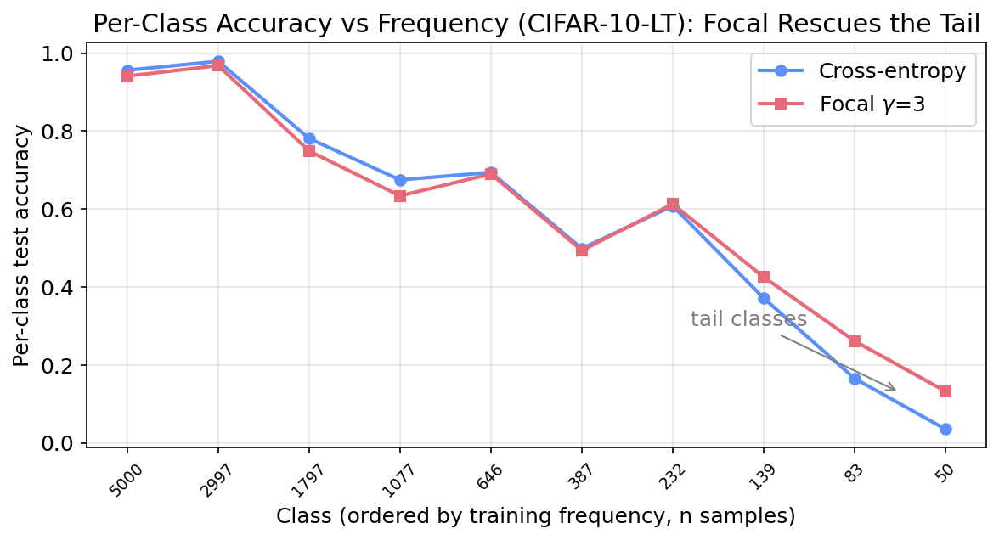
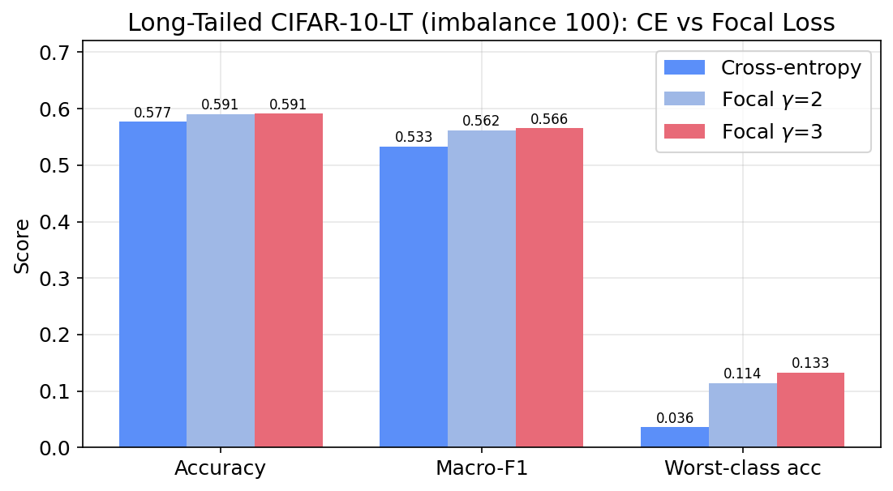

A Controlled Comparison of Focal Loss and Cross-Entropy for Small-CNN Image Classification on Balanced and Long-Tailed CIFAR-10
Naman Dwivedi, Raj Dandekar, Rajat Dandekar, Sreedath Panat
Vizuara AI Labs · hello@vizuara.com
TL;DR — On balanced CIFAR-10, cross-entropy wins on accuracy (87.90%); focal loss never beats it and only helps calibration at low γ. Under class imbalance the verdict flips: focal loss (γ=3) wins on every metric, lifting worst-class accuracy from 3.6% to 13.3% (3.7×). Focal loss is a tool for imbalance and calibration, not a generic accuracy upgrade.
Focal loss was introduced to address foreground-background imbalance in dense object detection, yet it is often adopted as a generic drop-in replacement for cross-entropy in image classification. We ask a precise question: does focal loss beat cross-entropy for CIFAR-10 classification with a small convolutional neural network? Holding a 0.31M-parameter CNN, optimizer, schedule, and augmentation fixed, we vary only the loss (cross-entropy vs focal loss with γ∈{1,2,3}) and the class distribution (balanced CIFAR-10 vs long-tailed CIFAR-10-LT, imbalance factor 100), and report top-1 accuracy, Expected Calibration Error (ECE), macro-F1, and worst-class accuracy. On balanced CIFAR-10, cross-entropy attains the best accuracy (87.90%); focal loss never exceeds it and degrades monotonically with γ, its only benefit being improved calibration at γ=1 (ECE 0.0154 vs 0.0337). Under class imbalance the conclusion reverses: focal loss with γ=3 improves accuracy (59.10% vs 57.66%), macro-F1 (by 3.2 points), worst-class accuracy (3.6% to 13.3%), and calibration (ECE 0.220 to 0.050). We conclude that focal loss is a tool for imbalance and calibration, not a generic accuracy upgrade.

| Loss | Accuracy | ECE | Macro-F1 | Worst-class |
|---|---|---|---|---|
| Cross-entropy | 0.8790 | 0.0337 | 0.8786 | 0.729 |
| Focal γ=1 | 0.8744 | 0.0154 | 0.8741 | 0.743 |
| Focal γ=2 | 0.8728 | 0.0660 | 0.8724 | 0.715 |
| Focal γ=3 | 0.8638 | 0.1096 | 0.8632 | 0.692 |
| Loss | Accuracy | ECE | Macro-F1 | Worst-class |
|---|---|---|---|---|
| Cross-entropy | 0.5766 | 0.2202 | 0.5332 | 0.036 |
| Focal γ=2 | 0.5908 | 0.0967 | 0.5618 | 0.114 |
| Focal γ=3 | 0.5910 | 0.0503 | 0.5655 | 0.133 |


@misc{dwivedi2026focal,
title = {When Does Focal Loss Help? A Controlled Comparison of Focal Loss and
Cross-Entropy for Small-CNN Image Classification on Balanced and
Long-Tailed CIFAR-10},
author = {Dwivedi, Naman and Dandekar, Raj and Dandekar, Rajat and Panat, Sreedath},
year = {2026},
note = {Vizuara AI Labs}
}